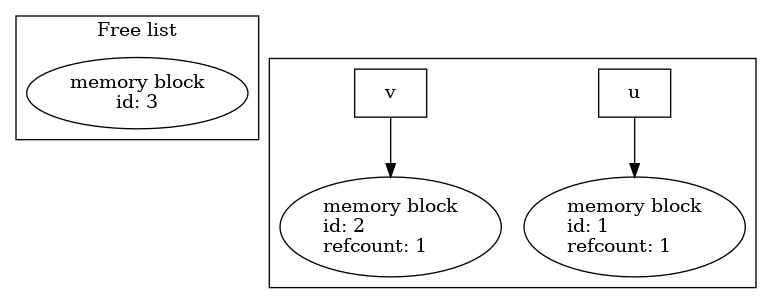
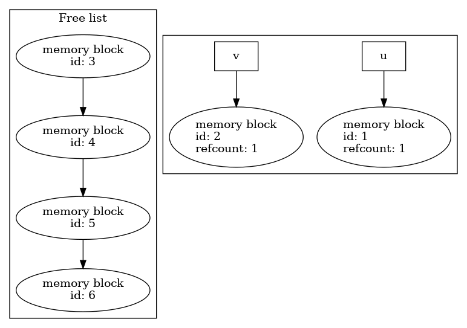

Derived type calculus based on a simple memory pool
Table of Contents
1. Objective
This document describes a simple memory management strategy enabling the manipulation of objects without repeated memory allocation or data copy. For instance
type(field_t) :: u, v !... w = v + 2. * u
would likely result in 2 allocations for intermediate evualuations
(2. * u and v + 2. * u) as well as a data copy for the assignment.
Instead, an implementation based on a memory pool can make such expressions work with pre-allocated memory blocks. Therefore no intermediate allocation and data copy are needed.
2. Memory pool as a linked list
The memory pool is implemented as a linked list of memory blocks (i.e. a free list). Each memory block as equal size.

Allocation from the memory pool is equivalement to popping a memory block off the front of the list, and releasing a memory block is equivalent to pushing it back to the front of the list.
In practice, the memory pool is constructed, and the blocks allocated with:
call init_memory_pool(nblocks, size)
Applications can request a block from the memory pool using the
get_memory_block function.
use pool_module, only: memory_block_t, get_memory_block type(memory_block_t), pointer :: memblock_ptr memblock_ptr => get_memory_block()
The get_memory_block function returns a pointer to memory_block_t,
which target is the head of the memory block list.

A memory block can be released to the memory pool using the
release subroutine.
call release(memblock_ptr)
A memory block's metadata include an integer refcount, for
reference count. Applications using the memory pool can increase or
decrease this number to track how many times a particular memory block
is referenced by one or more objects.

Finally , the memory pool can be destroyed, and all its memory blocks deallocated, with
call finalise_memory_pool()
Whenever the last memory block in the list is requested, the pool is automatically extended, doubling the size of the free list. For example, considering a memory pool made of 3 blocks with the first two being allocated.

If the last remaining block is requested, before allocation, the memory pool is extended into

3. Derived type calculus using the memory pool
We introduce a derives type field_t that holds a pointer to a memory block
type field_t type(memory_block_t), pointer :: data => null() contains ! ... end type field_t
A field_t object is assigned a memory block upon instanciation, for
instance by calling get_memory_block from the field_t constructor.
type(field_t) :: u, v ! Construct two distinct field instances u = field_t() v = field_t()
Both field_t instances u and v hold a pointer to a different
memory block:

3.1. Assignment and reference counting
By default, an assignment statement like v=u would result in a copy
or automatic allocation on assignment. Instead, the field_t
assignement operator is defined to redirect v's memory block pointer
to u's.
v = u ! Now both u and v data pointer points to the same memory block

The memory_block_t type includes a integer component refcount that
can be used to count the number of pointers pointing to a
memory_block_t instance. The assignment operator for field_t
increases the target memory block's reference count by 1.
module pool_module interface assignment(=) module procedure field_from_field end interface assignment(=) contains subroutine field_from_field(a, b) !> Defines assignment =. type(field_t), intent(out) :: a type(field_t), intent(in) :: b a%memblock => b%memblock b%memblock%refcount = b%memblock%refcount + 1 end subroutine field_from_field end module pool_module
A block's reference count is decremented each time the final
precedure field_destructor is called. If the blocks's reference
count reaches 0, the block is released to the memory pool through the
release subroutine. Using the final keyword for
field_desctructor in the in the field_t means that objects of type
field_t automatically release the memory block they point to when
they are on the left hand side of an assignment, passed to a procedure
in which the corresponding dummy argument as the intent(out)
attribute or deallocated.
Let's unpack what happens in an assignment statement such as
v = u
- Memory block targeted by
v'sdatapointer is released, or its reference count decremented. v's data pointer is made to point to the target ofu's data pointer (v%data => u%data).- The reference count for the targeted memory block is increased by 1.
3.2. Binary operators: addition
A statment of the form
w = u + v
will request a free memory block from the pool for the result of
u+v, which segment component is made to hold the result of the
addition. The assignment operator = then takes care of pointing
w's memory block pointer to it.
function field_add_field(a, b) !> Defines operator + for field_t objects. Result is allocated a !> new memory block from the pool. type(field_t) :: field_add_field type(field_t), intent(in) :: a type(field_t), intent(in) :: b field_add_field%data => get_memory_block() field_add_field%data%segment = a%data%segment + b%data%segment end function field_add_field
note I think that if w is allocatable, then the assignment
would trigger the deallocation and reallocation data - even if w's
size and shape doesn't change. In this case using the memory pool
allows to not allocate from the system. Not sure of the behavior if
w isn't =allocatable
4. References
- [1] Pool in More Depth (Boost.Pool documentation)
- [2] Chapter 4 - Boost.Pool (The Boost C++ Libraries)
- [3] Free list (Wikipedia)
- [4] Simple free list allocator (ANU's Systems, Networks, and Concurrency course).
- [5] Modern Fortran Explained, Incorporating Fortran 2018 (5th ed) (Sections 15.11 Finalization, 2.12 Pointers and 3.13 Pointers in expressions and assignments).